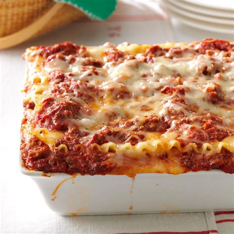

Lasagna

Description
The Lasagna is an italian traditional first dish from the city of Bologna. The original recipe is made with layers of egg pasta,
ragù bolognese, béchamel and grated cheese. However, there is an enormous amount of recipes surrounding this dish, not only in Italy,
but all over the world!
Let's see together how it's done!
Ingredients
For spinach egg pasta layers
- Remilled durum wheat semolina - 350 g
- Spinach - 250 g
- Egg yolks - 3
- Type 00 flour - 150 g
- Eggs - 2
For the ragù bolognese
- Minced beef - 300 g
- Carrots - 50 g
- Yellow Onions - 50 g
- Tomato purée - 300 g
- Extra virgin olive oil - 1 table spoon
- Black pepper - to taste
- Pancetta - 150 g
- Celery- 50 g
- Red wine- 1/2 cup
- Vegetable broth - to taste
- Fine salt - to taste
For the béchamel
- Butter- 70 g
- Whole milk - 1 L
- Nutmeg - to taste
- Type 00 flour - 70 g
- Fine salt - 1 pinch
To season
- Butter - to taste
- Parmigiano Reggiano cheese - 270 g
Recipe
Ragù
- Prepare the vegetable broth and keep it warm.
- Cut the pancetta bacon into strips and chop it.
- Finely chop onions, carrots, celery and set aside.
- Put a little bit of oil and the pancetta bacon in a saucepan, spread it with a wooden spoon and let it brown for a few minutes.
- Add the chopped vegetables and cook for 5-6 minutes.
- Add the minced meat, stir and rise the heat. Let the meat brown slowly.
- When it's browned, deglaze with red wine and let it evaporate completely.
- Add the tomato puree. and cook for 2 hours
- Cook for 2 hours with the lid on, without covering the pan completely.
- Stir regularly, add more broth when needed.
Pasta
- Pour the spinach into a pan, add a little water, cover with a lid.
- Cook for 5-6 minutes until they are wilted.
- Drain them, let them cool and squeeze them well.
- Transfer the spinach to a mixer and blend them until you get a puree. You will need approx 3.5 cups (100g) of it.
- Pour the semolina and 00 flour on a pastry board, add the spinach and create a fountain shape
- Add the lightly beaten eggs and egg yolks.
- Knead everything starting from the center, so the eggs won't slip out of the fountain.
- When you obtain an homogeneous dough, wrap it in plastic wrap and let it rest for 30 minutes. In the meantime, prepare the béchamel sauce.
- Heat the milk in a saucepan without boiling it.
- In another pan, place the butter and let it melt.
- Add the flour in one go and cook for a few minutes until you get a golden roux.
- Pour the hot milk in three times, mixing well.
- Add salt and flavor with nutmeg. Continue to mix until you get a creamy béchamel.
- Transfer to a small bowl, cover with plastic wrap and set aside.
- When the 30 minutes have elapsed, take a piece of the dough and cover the rest with plastic wrap to keep it from drying out.
- With the help of a little semolina, flatten it slightly on the pastry board to form a rectangle and roll out the dough in the machine.
Start from a wider thickness, then fold the dough and pass it over. When you feel it is too wet, sprinkle with a little semolina.
- Gradually reduce the thickness until you get a sheet just over 0.5 mm thick.
- Transfer it to a pastry board and cut into large rectangles 30x20 cm
- Continue this way until the dough is finished and in the meantime put a pot of water on the stove and add salt.
- When it starts to boil, immerse one sheet at a time, wait 30-40 seconds and using a skimmer drain it.
- Transfer it to a tray with a cloth and dab to remove excess water.
- Continue this way, placing the cooked sheets side by side, without overlapping them.
Lasagna
- When the ragù is ready, season with salt and pepper and proceed to the composition of the lasagna.
- Take a large 30x20 cm lasagna pan and grease the bottom.
- Add a thin layer of béchamel and one of ragù.
- Then place the first sheet, add another layer of béchamel and one of meat sauce. Add grated cheese.
- Continue like this until you have 5 layers.
- After placing the last sheet, add the ragù.
- Sprinkle with grated cheese and add some tufts of butter.
- Bake in a preheated static oven at 170°C for 40 minutes.
- Bon appetit!